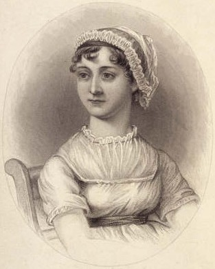

Jane Austen
Tarkkoja havaintoja tunteista ja yhteiskunnasta.
Jane Austen kuvaa perhettä, rakkautta ja toimeentuloa maailmassa, jossa pienillä valinnoilla on suuret seuraukset.
Etsi teokset kirjastostaElämä ja teokset
Jane Austen syntyi vuonna 1775 Steventonissa, Englannissa. Hän kasvoi suuressa pappisperheessä ja kirjoitti jo nuorena. Perheen muutot veivät hänet Bathiin ja myöhemmin Chawtoniin, jossa hän työsti tunnetuimmat romaaninsa julkaisukuntoon.
Järki ja tunteet ilmestyi vuonna 1811 nimettömänä: tekijäksi ilmoitettiin vain nainen. Sitä seurasivat Ylpeys ja ennakkoluulo, Kasvattitytön tarina ja Emma. Austen kuoli Winchesterissä vuonna 1817. Viisasteleva sydän ja Northanger Abbey julkaistiin hänen kuolemansa jälkeen.
Tyyli ja teemat
Austenin ironia syntyy usein siitä, että lukija huomaa jotakin, mitä henkilöhahmo ei vielä ymmärrä. Keskustelut, vierailut ja väärinkäsitykset paljastavat, miten raha ja asema vaikuttavat läheisimpiinkin ihmissuhteisiin. Rakkaustarinan rinnalla kulkee kysymys siitä, kuinka ihminen oppii arvioimaan itseään ja muita.
Ironia · Ihmissuhteet · Yhteiskuntaluokka
Aloita tästä
Järki ja tunteet
Elinor ja Marianne Dashwood kohtaavat menetyksiä ja rakastumisia eri tavoin. Aloita tästä, jos sinua kiinnostavat sisaruus, tunteet ja oman paikan löytäminen.
Ylpeys ja ennakkoluulo
Elizabeth Bennetin ja herra Darcyn ensivaikutelmat joutuvat koetukselle. Ironinen romaani rakkaudesta, yhteiskuntaluokasta ja kyvystä muuttaa omaa käsitystään.
Mansfield Park
Vaatimattomista oloista tullut Fanny Price kasvaa varakkaiden sukulaistensa kartanossa. Austenin romaani tutkii perhettä, yhteiskunnallista asemaa ja omantunnon valintoja terävän ironian sävyttämänä. Uusi suomennos.
Lukiessa kannattaa huomata, milloin kertojan lempeä ääni muuttuu ironiseksi. Kenen käsitystä tilanteesta juuri nyt seuraamme?